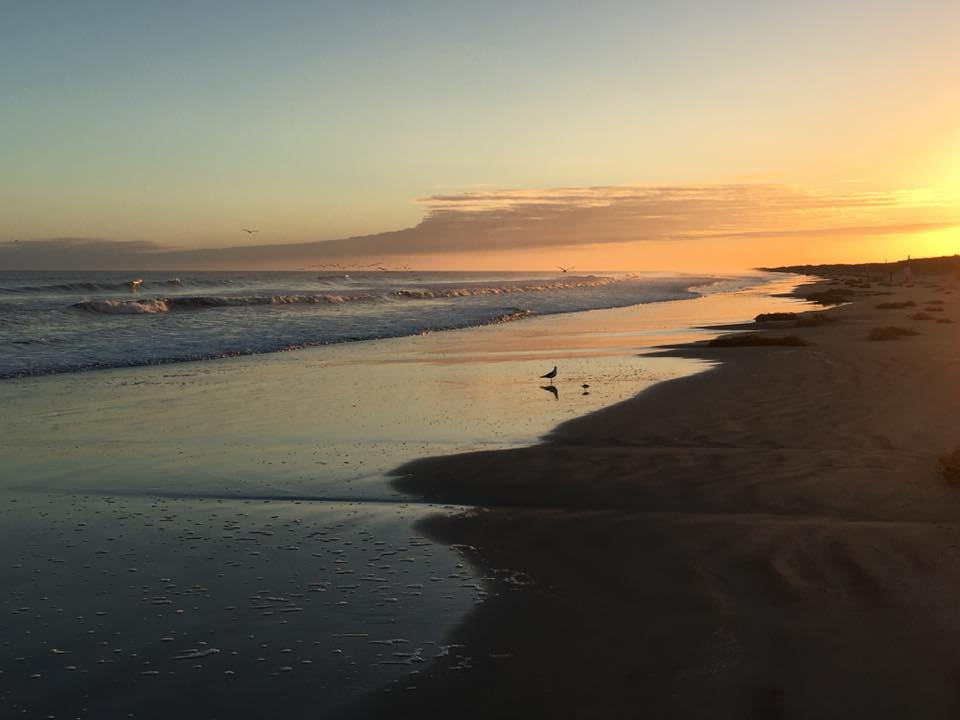

Outside of academics, I enjoy reading novels, tending to my houseplants, playing video games, and trying new recipes.
I started my combined Masters and PhD in Computer Science at Clemson University in August 2019. I joined the HFSE lab under the direction of Dr. Paige Rodeghero during the Summer of 2020.

I moved to Wilmington after graduating high school to attend the University of North Carolina at Wilmington. I graduated with my B.S. Honors in Computer Science with a Digital Arts concentration in May 2019.
During my undergraduate career, I was an active member of the SIGGRAPH and the Math & Stats club. I participated in a few outreach programs such as volunteering for Science Olympiad and Watson College of Education's STEAM Celebration. I also served as an Engineering Expectations summer camp instructor for 2 years.
Muenster is my hometown, and I graduated from Muenster High School in May 2015. During my high school career, I was very active in UIL, taking AP classes, being on the yearbook team, playing the flute in the Fighting Hornet Marching Band, and spending my Saturdays shelving books at the Bettie M. Luke Public Library.